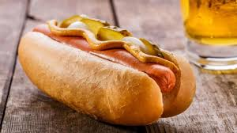
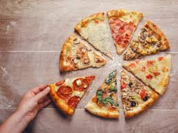

Preheat a grill to medium high. Form ground beef (preferably chuck) into 6-ounce patties and make an indentation in each. Season the patties on both sides with salt and pepper. Lightly brush the grill grates with vegetable oil, then grill the patties, indentation-side up, until marked on the bottom, about 5 minutes. Flip and cook until marked and slightly firm, about 3 more minutes for medium doneness. For cheese
Pizza is a savory dish of Italian origin, consisting of a usually nd, flattened base of leavened wheat-based dough topped with tomatoes, cheese, and often various other ingredients baked at a high temperature, traditionally in a wood-fired oven. A small pizza is sometimes called a pizzetta
3 cups cabbage (shredded) 1 medium carrot (about ½ cup shredded) ¼ cup bell pepper (or capsicum julienned) 2 sprigs spring onions ((white & green separated)) 1 to 2 tsps olive oil Images may be subject to copyright. Learn More Related images